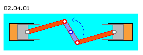
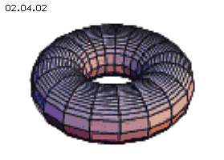

| Alfred Evert | 06.03.2003 |
02.04. Nicht Kreis, Gerade, Torus
Lineare Bewegungen
An den Flächen zwischen Kolben und Zylindern bewegt sich Materie relativ zueinander. Aber gerade solche Grenzflächen gibt es im (intern) ´grenzenlosen´ Äther des Universums nicht. Es können sich nicht Äther-Portionen gegeneinander verschieben, schon gar nicht linear.
Äther ist ´weich´ wie ein Gas oder eine Flüssigkeit, es ist im Äther sogar verlustfreie Bewegung möglich. Im Unterschied zum Äther bestehen Fluide aus Teilchen und zwischen den ´Strömungsfäden´ sind Grenzflächen gegeben, wo sich Bewegungen in unterschiedliche Richtung oder von unterschiedlicher Geschwindigkeit aneinander vorbei schieben können. Der Äther aber ist ein reales Kontinuum und bietet damit nicht diese Möglichkeit relativer Bewegung von Teilen gegen einander.

Wann immer ein Körper in einer Kreisbewegung in eine neue Richtung kommt (hier z.B. oben nach links), muss dort ´Masse´ nach außen weg geräumt werden (so wie hier z.B. die Pleuelstange über den Kolben Luftmasse nach links drückt). Dieser Prozess findet hier bei diesem Boxermotor nach beiden Seiten statt, im Prinzip aber rundum in alle Richtungen.
Das gleiche gilt auch beim Äther, nur ist dort in der Umgebung nicht leicht zu verdrängende Luft, sondern rundum lückenlos Äther gleicher ´Härte´. Wann immer sich also ein Ätherpunkt (zur Erinnerung: die gedankliche Einheit anstelle der nicht realen Äther-Teilchen) auf einer Kreisbahn befinden sollte, muss anderer Äther zugleich von dort nach außen weg transportiert werden (analog zum mechanischen Beispiel obiger Pleuelstange).
Es gibt aber nirgendwo ´freie Lücken´ für die Zwischenspeicherung dieser im Wege befindlichen Äthervolumina. Darum kann es Kreisbewegungen dieser einfachen Art (nur in einer planen Ebene) im Äther selbst nicht geben. Das gilt damit auch für vorige Wellen, wenn bei diesen unterstellt wird, dass die Schwingung nicht nur in einer Ebene erfolgt, sondern zugleich um die Längsachse der Ausbreitungsrichtung rotiert.

Als anschauliches Beispiel werden die Rauchringe genannt, welche sich als Bewegungsmuster viele Meter im Raum bewegen können und womit z.B. eine Kerze auf einige Meter Entfernung ausgeblasen werden kann. Das bewegte Medium ist hierbei die (unsichtbare) Luft und in diesem Luftwirbel eingeschlossen bleiben die (sichtbaren) Rauchpartikel.
Äther selbst kann sich aber in dieser Form nicht bewegen, es können keine Äthervolumina durch das mittige enge Loch gezwängt werden (um sich anschließend wieder auszudehnen). Es müssten sich hierzu Grenzflächen gegeneinander verschieben - und die besitzt das Äther-Kontinuum nicht.
Kreisförmige oder lineare oder solch einstülpende Bewegungen sind auf Ebene der materiellen Erscheinungen durchaus möglich, nicht aber im Äther selbst. Äther ist eben nicht die ´nur-etwas-andere-Materie´, sondern die einzige reale Substanz mit einzigartigen Eigenschaften. Um die offenen Probleme der Physik erklärbar zu machen (bzw. damit diese Erscheinungen überhaupt erst möglich sind), muss Äther ganz anders sein - darf z.B. eben nicht die im Materiellen üblichen Bewegungsmöglichkeiten aufweisen.
Bewegung in gerader Richtung sind tägliche Erfahrung bei der Handhabung fester Körper wie bei den Abläufen in vielen Maschinen. In Bild 02.04.01 ist beispielsweise ein ´Boxermotor´ schematisch dargestellt, bei welchem die Kolben innerhalb der Zylinder geradlinig bewegt werden (beschleunigt und verzögert wie bei voriger Hubbewegung der Wasserwellen).
Dieses Beispiel zeigt zugleich eine Kreisbewegung, indem die mittige Kurbelwelle (blau) um die Systemachse dreht. Auch dort bewegen sich Grenzflächen relativ zueinander, z.B. das äußere Ende dieser Kurbel gegenüber der Umgebung (wie jedes drehende Rad). Hier wird aber durch die beidseitigen Kurbelstangen (rot) noch ein anderer wichtiger Gesichtspunkt deutlich.
Oftmals wird Bewegung in Form eines Torus (dessen prinzipielle Form in Bild 02.04.02 dargestellt ist) als ein alternatives Modell der Atome diskutiert oder als Träger von Energie usw.. Tatsächlich ergeben die Kombination einer Bewegung um die Mittelachse dieses Rings plus einer Bewegung um die kreisförmige Achse im Ring interessante Bewegungsmuster.
02.05. Keine stehende Welle
Äther-Physik und -Philosophie